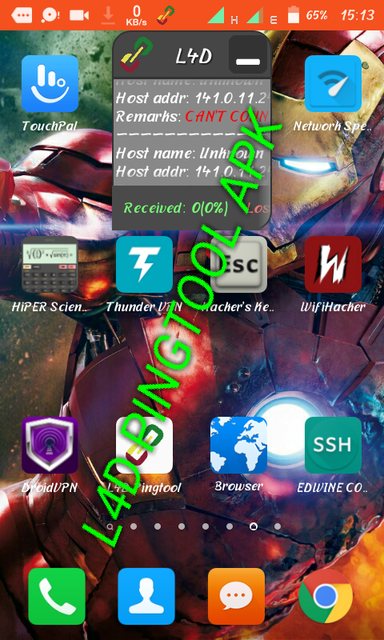

Hey!guys welcome to my blog today i will be showing how easy it is to setup and use droid vpn and maybe stabilizing it incase of any queries in its action.
So let me try to explain more about this app it doesnt use V2ray like napsternet or other apps it simply uses Servers where some are free others are premium
So am going to first of all teach you how to use Droid then later show how to stabilize it because its not so stable on some phones.Lets begin.
STEP 1
So first you download the app click on the button to download
STEP 2
After installation, open app and tap "menu" then "account" and then"signup for free" After signing up wait a little bit for the activation link which is sent to your email.Open gmail app and activate your account
After all this put ur account in the app
STEP 3
After saving account information...tap the "menu" icon again and click "update servers"
NOTE:You must make sure you have an active internet connection
STEP 4
Tap "menu" icon then go to settings and tap "UDP CONNECTION SETTINGS" so here i will give all these to try incase some are not supported by ur phone
Remote port = 80,443 or 53
Local port = 8080,1089 or 3128
Disable port scan
UDP connection mode = mode1
T count = 4500
R count = 5555
STEP 5
Press back to "VPN CONNECTION SETTINGS
Enable first three permissions
MTU tunnel size = 1024
LASTLY
Return to home select a server of your own...if you have a free account..only connect using first 24 servers and if premium account...choose any server of your choice.
Press "start" until it connects successfully
STABALIZING DROID VPN
USING L4D PING TOOL
Download l4d pingtool apk..
After successful download and installation, turn on cellular data and open l4d pingtool..it will float on top of the screen..minimize it and and open droid vpn apk..press start...enjoy long lasting connection..is shown as below..

LEGIT METHOD
This is the most appropriate and fantsy method of making droid long lasting... Use your brain for once!!..you can combine both methods 1&2 and connect the VPN..